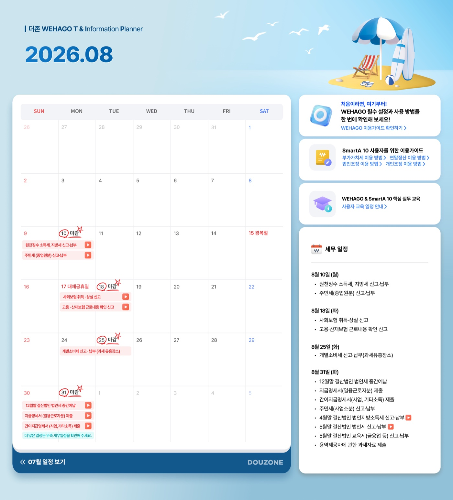
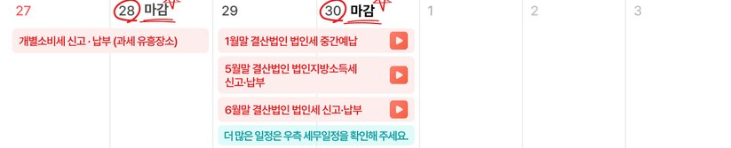
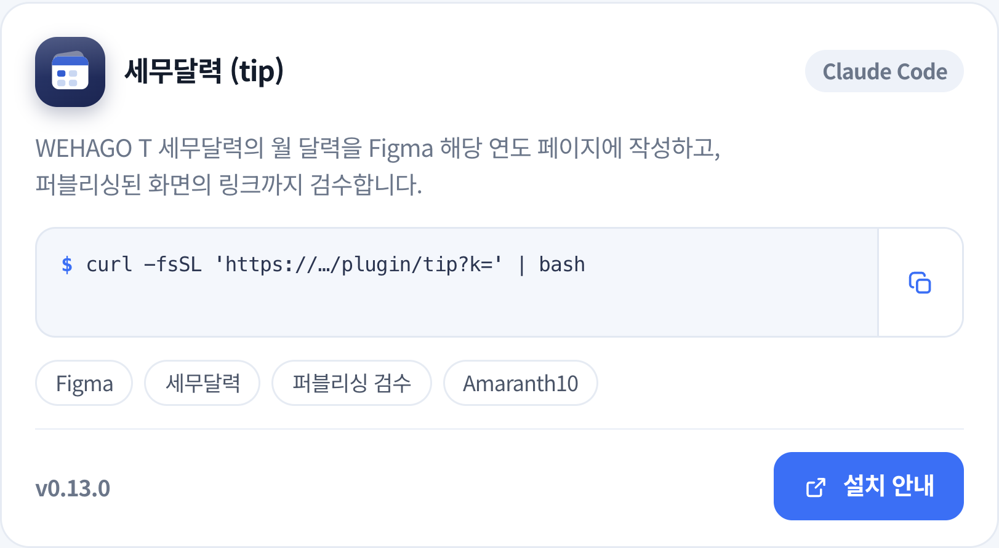
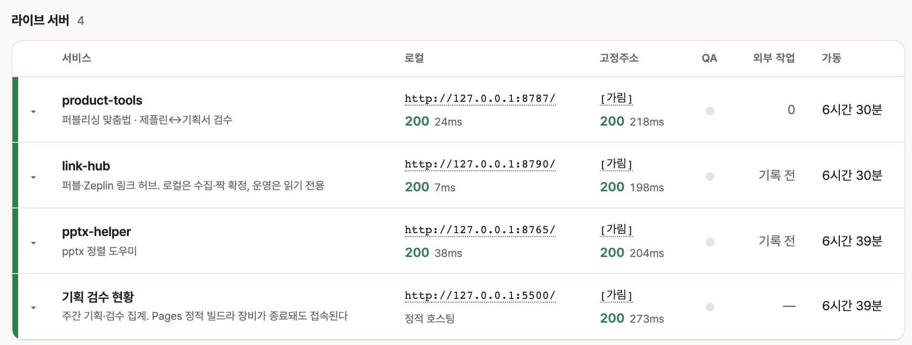

박유진Product Manager
새로운 것을 배우고 직접 만들어보는 걸 좋아하는 기획자예요. B2C 게임 플랫폼, 세무·회계 SaaS를 거쳐 현재는 보안이라는 새로운 도메인을 배우고 있어요. 업무 밖에서도 궁금한 것이 생기면 직접 만들어보거나 실험해보는 편이고, 최근에는 그 관심이 AI와 자동화 업무 도구를 만드는 쪽으로 이어지고 있어요.
 이스트시큐리티
이스트시큐리티
 더존비즈온
더존비즈온
 프롬더레드
프롬더레드
이 글에 대해
더존비즈온에서 제품 기획을 하며, 업무 중 어떤 일은 AI에게 맡기고 어떤 판단은 사람이 남겨야 하는지 직접 실험한 과정을 정리했어요. 첫 대상은 반복성이 높고 실패해도 리스크가 낮은 세무달력으로 정했어요. 작은 업무에서 AI가 잘하는 일과 사람이 확인해야 할 지점을 나눈 뒤, 같은 방식을 시안 대조, 화면 스펙 작성, 기존 화면 탐색, 정책 문서 정리까지 확장했어요.
진행 방법
기존 AI를 쓰던 방식
기존에는 AI를 어떻게 사용했나요?
AI는 주로 ChatGPT로 사용했어요. 초안 작성, 문서 확인, UX 문구 작성처럼 필요한 순간에 질문하고 답을 받는 방식이 중심이었어요. 지금도 이런 단발성 작업이나 빠르게 의견을 확인할 때는 ChatGPT를 계속 사용하고 있어요.
이 정책 문서에서 서비스 관리자 지정 조건만 찾아줘.
서비스를 배포받은 사용자라면 관리자로 지정할 수 있어요.
그럼 메뉴 권한까지 확인하는지도 같이 봐줘.
왜 Claude Code를 쓰기 시작했나요?
회사에서 Claude Code를 전사 도입한다는 소식을 들었어요. 정식 도입보다 2주 먼저 Pro 버전을 써봤어요. Claude Code의 실행 결과를 귀엽게 알려주는 작은 프로그램이 있으면 좋겠다고 생각했고, 그 생각에서 개인 다마고치 프로젝트 Nuttie를 만들기 시작했어요.
집과 회사에서 같은 프로젝트를 이어서 작업하려고 GitHub를 썼어요. Nuttie를 다른 사람에게도 보여주고 싶어서, 별도 개발환경 없이 바로 실행되는 .exe 프로그램 형태로도 만들어봤어요. 이 과정에서 Git과 Claude Code CLI를 자연스럽게 익혔어요.
팀원에게 나눠주는 과정에서는 실패도 여러 번 겪었어요. 처음에는 GitHub 저장소를 클론해 실행하는 방식으로 공유했더니 상대방이 직접 환경을 준비해야 해서 번거로웠고, 응용 프로그램은 보안 정책상 실행이 안 되는 등 여러 문제를 겪어 이후에는 여러 방법을 테스트했어요.
그럼 실제 업무에는 어떻게 써봤나요?
2026년 8월부터 Claude Code를 본격적으로 사용했어요. 약 한 달 동안 회사 프로젝트에만 3,000만 토큰을 사용하며, 실제 기획 업무에 반복적으로 적용하고 검증했어요. 지금부터는 실제 업무에서 겪은 일화를 하나씩 소개해요.
다만 중요한 건 사용량 자체가 아니에요. Context가 불필요하게 커지지 않도록 메모리를 구조화하고, 반복되는 정보는 줄이며, 필요한 맥락만 유지하는 방식도 함께 다듬었어요. 이 과정은 입문 내용보다는 조금 더 깊은 주제라, 자세한 내용은 숙련자용 페이지에 따로 정리했어요.
실무에 들어가기 전, 먼저 알아야 할 AI의 상태
AI는 내 업무의 맥락을 처음부터 알고 있지 않아요. 쉽게 말하면, 역량은 있지만 우리 팀의 일하는 방식은 아직 모르는 신입사원에 가까워요. 참고 자료와 판단 기준, 예외, 완료 조건을 쌓아가며 업무 맥락을 학습시키는 과정이 필요해요.
| 질문 | AI가 이해해야 할 것 | 예시 |
|---|---|---|
| 어디서 | 어떤 자료와 데이터를 참고해야 하는지 | 기획서, Jira, Wiki, 기존 화면, 운영 데이터 |
| 무엇을 | 어떤 결과물을 만들어야 하는지 | Figma 시안, 화면 스펙, 정책 문서, 검수 결과 |
| 어떻게 | 어떤 기준으로 판단하고 예외를 처리할지 | 문구 일치 여부, 제외 조건, 검수 기준, 완료 조건 |
| 왜 | 이 일을 하는 목적이 무엇인지 | 사용자 불편 개선, 검수 누락 방지, 반복 업무 축소 |
제가 자주 쓰는 방법은, 육하원칙처럼 업무 맥락을 하나씩 채워가는 방식이에요.
지난달 결과물과 이번 달 원본으로 가르친 세무달력
업무 환경 세팅은 어떻게 진행했나요?
업무별로 Claude Code 창을 2~3개 띄워두고 사용했어요. 한쪽에는 세무달력을 맡겨두고, 다른 창에서는 시안 대조나 문서 정리를 시키는 식으로 여러 작업을 동시에 진행했어요. 각 창에는 서로 다른 일을 맡겨두고, 필요한 순간에 결과를 확인하는 방식으로 사용했어요.
- 피그마 링크 확인
- 6~7월 프레임 비교
- 컬러·레이아웃 규칙 추출
- 예외 케이스 정리
- 공휴일 표기 규칙 확인
- 공통 패턴 정리
- 위키 문서 검색
- 급여이체 API 명세 확인
- 요청·응답 값 정리
화면은 맥 터미널 기준이에요. 맥에서는 터미널, 윈도우에서는 PowerShell을 사용했고, VSCode 등 다른 도구도 있으니 본인에게 맞는 것을 쓰면 돼요.
첫 대상으로 왜 세무달력을 골랐나요?
저에게 세무달력은 어렵지는 않지만 반복적이고 번거로운 업무였어요. 매월 1일 해당 월의 세무 신고 일정을 공지사항에 올리는 일이라 이전 결과물과 원본 자료가 항상 남아 있었고, 만드는 순서와 확인 방식도 거의 같았어요. 그래서 AI에게 업무 전체를 먼저 맡겨보고 어디까지 가능한지 확인하기에 부담이 적은 첫 실험 대상으로 적합했어요.
AI에게 맡길 일을 처음부터 시작하는 업무를 주는 것보다, 이미 하던 업무 중 AI가 실패해도 부담이 적은 일부터 맡겨보기로 했어요.
AI에게는 일을 어떻게 가르쳤나요?
처음부터 제작 규칙을 자세하게 설명하지는 않았어요. 이미 만든 세무달력 Figma 프레임 URL을 넘기고, '이 달력의 제작 방식을 분석해서 규칙을 .md 파일로 정리해줘'라고 요청했어요. 이번 달 세무 일정은 회사 내부 문서 URL을 함께 전달해 직접 참고하도록 했어요. Figma와 사내 문서는 MCP로 연결했고, 연결 방법을 모르더라도 Claude Code에 물어보며 하나씩 설정할 수 있었어요.

 Figma 프레임 분석제작 방식 파악
Figma 프레임 분석제작 방식 파악결과는 어땠나요?
세무달력 한 건 만드는 데 걸리던 시간이 2시간에서 2.9분으로 줄었어요. 지금은 '9월 세무달력 만들어 줘' 한 줄만 보내면, AI가 지난달 결과물에서 방식을 파악하고, 이번 달 원본에서 내용을 조회해 결과물을 만들어요.
2시간은 원본에서 일정 추출, Figma 제작, 테마 이미지, 원본 대조까지 네 단계를 합친 시간이에요. 그리고 첫 완성본은 15분 정도 걸렸었는데 시간을 단축하기 위해 Figma MCP간의 API 호출 왕복 횟수를 줄이는 방법 등을 강구해 2.9분까지 줄였어요.
작업하면서 학습한 제작 방식과 검수 기준은 .md로 남기고, 반복해서 쓸 내용은 Skill로 묶어 뒀어요. 이후에는 Claude가 필요할 때 이 내용을 참고할 수 있어서, '9월 세무달력 만들어 줘'처럼 짧게 요청해도 이전에 익힌 방식으로 이어서 작업할 수 있었어요.


AI에게 업무를 맡기면서 문제는 없었나요?
결과를 만드는 것과 그 결과를 그대로 믿고 써도 되는 것은 달랐어요. 세무달력에서도 원본에는 링크가 없는 항목에 다른 영상이 연결된 적이 있었는데, 링크가 열리는지만 확인하던 검수 방식으로는 이 문제를 잡아내지 못했어요.

이렇게 다듬은 기준은 저만 아는 채로 두지 않고, 세무달력을 만들고 검수하는 과정 전체를 Claude Code Plugin으로 묶어 팀원들도 그대로 받아 쓸 수 있게 만들었어요. 담당자가 바뀌어도 같은 기준으로 세무달력을 만들 수 있어요.
이 경험을 통해 AI가 잘 만드느냐보다, 어떤 기준으로 검수해야 안심하고 맡길 수 있는지가 더 중요하다는 걸 알게 됐어요.
시안과 기획서 대조, 잘못 걸리는 것부터 줄이기
적용한 다섯 업무
세무달력 다음에는 하던 기획 업무 네 가지로 범위를 넓혔어요. 그중 결과를 수치로 확인한 두 가지를 대표 사례로 정리했고, 나머지 셋은 같은 방식으로 AI가 맡을 부분과 사람이 판단할 부분을 나눠 적용했어요.
시안·기획서 대조
퍼블리싱 페이지의 한국어 맞춤법을 검사하던 도구에 붙인 기능이에요. 디자이너가 만든 시안이 기획서 문구와 맞는지 제가 한 줄씩 맞춰 보던 검수를, 지금은 확정된 Zeplin 시안을 기준으로 같은 화면의 Figma 기획서와 자동으로 대조하고, 검수 리포트에서 반영·확인·표기 통일로 나눠 담당별로 보여 줘요.
수백 건 중에서 실제로 볼 것만 남기려면 어떻게 해야 했나요?
갈라진 문구는 다시 하나로 묶고, 예시 데이터와 시안 전용 표시는 비교 대상에서 뺐어요. 남은 항목만 디자인 반영, 기획 확인, 표기 통일로 나눠 담당을 정해 사람이 봤고요. 규칙으로 걸러 내다 필요한 항목까지 빠지지 않도록, 뺀 항목은 조용히 버리지 않고 로그로 남겨 다시 확인할 수 있게 했어요.
- 여러 조각으로 갈라진 문구를 다시 붙입니다
- 표·목업 예시 데이터, 시안 전용 라벨은 제외합니다
- 남은 항목만 디자인 반영·기획 확인·표기 통일로 나눕니다
규칙 8개와 AI 판단 단계는 숙련자용 페이지에 정리했어요.
이 도구는 원래 퍼블리싱 페이지의 한국어 맞춤법만 검사하던 작은 프로그램이었어요. 여기에 시안·기획서 대조 기능을 붙이면서 도구 이름도 '프로덕트 툴'로 바꿨고, 이어서 제플린 시안을 원본 화질 그대로 받는 기능까지 추가했어요.
맡길 일과 남길 일을 나누고 팀에 건네기
AI에게 맡길 일과 사람이 남길 일은 어떻게 나눴나요?
새 업무를 볼 때 네 가지로 나눠 봐요. 이 일을 어떤 모양과 규칙으로 하는지, 매번 새로 들어오는 정보가 어디 있는지, 정해진 순서로 반복되는 단계가 무엇인지, 기준·예외·최종 결정이 필요한 지점이 어디인지요. 이렇게 나누면 AI에게 맡길 자리와 사람이 봐야 하는 자리가 함께 보여요.
팀에 건넨 방법
제 PC에서만 돌던 방식을 팀원도 같은 방식으로 쓰게 하는 것이 목표였어요. 기술은 먼저 고르지 않았고, 막히는 지점이 생길 때마다 그 지점을 푸는 것으로 하나씩 골랐어요.
| 막힌 지점 | 고른 방법 | 가능해진 것 |
|---|---|---|
| 기준과 자료가 제 PC 폴더에만 있어 저만 쓸 수 있었어요 | 업무 폴더를 플러그인으로 묶었어요 | 팀원이 어느 폴더에서든 같은 명령으로 써요 |
| 원본 일정 문서와 기획서를 사람이 열어 AI에게 옮겨 줘야 했어요 | 그룹웨어 문서와 Figma를 MCP로 연결했어요 | AI가 원본을 직접 읽어 와요 |
| 설치 없이 결과만 보려는 팀원은 열어 볼 길이 없었어요 | 웹 주소를 붙이고 결과 사본을 따로 올렸어요 | 링크 하나로 열어 보고, 제 PC가 꺼져 있어도 나온 결과는 열려요 |
| 공유한 도구가 끊겨도 아무도 몰랐어요 | 상태를 한 화면에서 보는 점검 화면을 만들었어요 | 끊겼다 다시 켜진 도구를 바로 알아봐요 |

건넨 도구 점검

구현 구조 자세히 보기
- 플러그인은 저장소 하나에 이름·버전 설정과 설치 목록을 두는 구조예요. 명령, 규칙 문서, MCP 연결 설정이 설치할 때 함께 들어가요.
- 설치 경로는 둘로 나눴어요. 저장소 권한이 있으면 명령 두 줄로, 개발 도구가 없으면 포털 카드의 한 줄로 설치해요.
- 사내망이 필요한 앱은 제 PC에서 돌리고 고정 주소를 붙였어요. 검사 결과는 사본을 Cloudflare에 올려 60일 동안 열람할 수 있어요.
- 점검 화면은 제 PC에서 서버, 예약 작업, 플러그인, 저장소 상태를 30초마다, MCP 연결은 5분마다 확인해요.
폴더 구성, 설치 명령, 자동 갱신, 점검 화면의 탭별 기능은 숙련자용 페이지에 정리했어요.
개발하지 않는 기획자가 하던 일에 AI를 붙인다는 것
달라진 일하는 방식
| 전 | 후 | |
|---|---|---|
| 요청 방식 | 매번 형식·자료를 다시 설명 | 한 번 정한 기준을 그대로 사용 |
| 자료 확보 | 찾아서 복사해 넘김 | AI가 필요한 자료를 직접 찾음 |
| 결과 확인 | 같은 항목을 매번 확인 | 기본 확인까지 마친 결과를 판단 |
자기 업무에 AI를 붙여 보고 싶다면 어떤 순서로 시작하면 좋을까요?
완성된 자동화를 찾지 말고, 지금 하는 업무 하나에서 시작하면 좋겠어요. 개발을 하지 않아도, 평소 일하며 하던 설명을 문서로 정리하는 데서 시작할 수 있었어요.
AI에게 맡긴 것과 기획자가 남긴 것
- 정해진 순서 실행
- 자료 조회
- 규칙에 따른 정리
- 비교할 수 있는 기본 검수
- 무엇을 할지 결정
- 기준 설계
- 예외 판단
- 결과 판단과 최종 확인
더 깊이 보고 싶다면
대조 규칙 8개와 AI 판단 단계, 세무달력 검수기, 플러그인 폴더 구성과 자동 갱신, 도구를 나눠 쓰는 방식, 점검 화면(status-board) 전체 구성은 실제 설정과 실측 값으로 따로 정리했어요.
숙련자용 페이지 보기 →